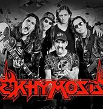

Su adolescencia, época decisiva para la formación de gustos musicales, transcurrió en los ochenta. Juanes explica que en esa década los jóvenes de Medellín se sumergían en géneros como el rock, metal y el punk, para escapar, para drenar la frustración que sentían por la violencia en la que la ciudad estaba sumergida a manos de la guerrilla, paramilitares, narcotráfico, entre otros.

En sus inicios, Juanes desató su pasión por el metal (en este caso el trash metal) con Ekhymosis, su primera banda. Además, en múltiples oportunidades ha confesado que una de sus bandas favoritas es Metallica e incluso ha dicho que le gustaría colaborar con ellos. en sus inicios formo parte de la banda khymosis.
ekhymosis con la que publicó seis álbumes logrando reconocimiento en la escena musical de su país natal.
